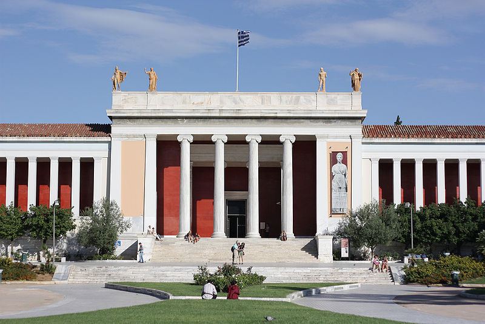

Quienes somos - Museo Arqueologico de Atenas
Índice
Periodos Históricos
Quienes somos
Artes Plásticas y arquitectura
Dioses Griegos y Romanos
Lugares de Interés
Enlaces Externos
Propiedad Los propietarios actuales del Museo Arqueologico de Atenas. Ayuntamiento de Atenas, y el gobierno de la republica helenica.
